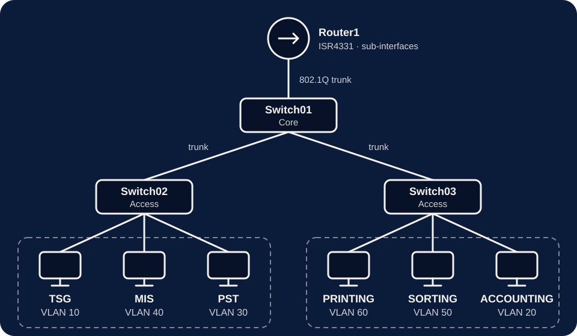

3-Switch Hierarchical VLAN Network
A core switch, two access switches and six department VLANs, with one router letting every department reach the others.
Overview
This Cisco Packet Tracer lab splits six departments into their own VLANs across a core switch and two access switches. A router with sub-interfaces (router-on-a-stick) lets the departments talk to each other while staying separated on the switches.
- Switch01 is the core switch. Switch02 and Switch03 are access switches.
- Six departments, each in its own VLAN: TSG, Accounting, PST, MIS, Sorting and Printing.
- All links between switches, and from the core to the router, are 802.1Q trunks.
- Router1 provides the default gateway for every VLAN through its sub-interfaces.
Topology

VLAN plan
| VLAN ID | Department | Network | Gateway |
|---|---|---|---|
| 10 | TSG | 192.168.10.0/24 | 192.168.10.1 |
| 20 | ACCOUNTING | 192.168.20.0/24 | 192.168.20.1 |
| 30 | PST | 192.168.30.0/24 | 192.168.30.1 |
| 40 | MIS | 192.168.40.0/24 | 192.168.40.1 |
| 50 | SORTING | 192.168.50.0/24 | 192.168.50.1 |
| 60 | PRINTING | 192.168.60.0/24 | 192.168.60.1 |
Example PC addressing: Accounting PC 192.168.20.2, Sorting PC 192.168.50.2, Printing PC 192.168.60.2, all with mask 255.255.255.0 and the gateway of their own VLAN.
Configuration
Switch01 (core): VLANs and trunk ports
enable
configure terminal
vlan 10
name TSG
vlan 20
name ACCOUNTING
vlan 30
name PST
vlan 40
name MIS
vlan 50
name SORTING
vlan 60
name PRINTING
interface gi0/1
switchport mode trunk
interface gi0/2
switchport mode trunk
interface gi0/3
switchport mode trunk
endAccess switch example: PC ports and uplink trunk
configure terminal
interface fa0/1
switchport mode access
switchport access vlan 60
interface fa0/2
switchport mode access
switchport access vlan 50
interface fa0/3
switchport mode access
switchport access vlan 20
interface gi0/1
switchport mode trunk
endRouter1: router-on-a-stick sub-interfaces
enable
configure terminal
interface g0/0/0
no shutdown
interface g0/0/0.10
encapsulation dot1Q 10
ip address 192.168.10.1 255.255.255.0
interface g0/0/0.20
encapsulation dot1Q 20
ip address 192.168.20.1 255.255.255.0
interface g0/0/0.30
encapsulation dot1Q 30
ip address 192.168.30.1 255.255.255.0
interface g0/0/0.40
encapsulation dot1Q 40
ip address 192.168.40.1 255.255.255.0
interface g0/0/0.50
encapsulation dot1Q 50
ip address 192.168.50.1 255.255.255.0
interface g0/0/0.60
encapsulation dot1Q 60
ip address 192.168.60.1 255.255.255.0
endVerification and results
I checked each layer with these commands, then tested pings between departments.
show vlan brieflists the VLANs and the ports in each one.show interfaces trunkshows the trunks as trunking and carrying VLANs 1, 10, 20, 30, 40, 50 and 60.show ip interface briefshows Gi0/0/0.10 to Gi0/0/0.60 as up/up.- Pings from each PC to its own gateway, then to PCs in other VLANs, were successful.
Final checklist
- VLANs created
- PC ports assigned to VLANs
- Switch-to-switch links set as trunks
- Switch-to-router link set as a trunk
- Router sub-interfaces created
- PC IP addresses and gateways configured
- Ping tests successful
Problems I found and how I fixed them
1. Invalid interface type and number
What happened: I entered interface fa0/0.10 on the router and got an error.
Cause: the router has no FastEthernet 0/0 interface.
Fix: use the real interface name, interface gi0/0/0.10.
2. VLANs existed but no ports were assigned
What happened: on Switch03, VLANs 20, 50 and 60 showed as active but no ports were listed under them.
Fix: assign each PC port with switchport access vlan <number>, then check again with show vlan brief.
What I learned
VLANs separate networks, trunks carry multiple VLANs between devices, and router sub-interfaces let different VLANs communicate.
- VLANs improve security and cut broadcast traffic.
- They keep departments separate and make the network easier to manage.
- When something fails, check VLANs, then trunks, then the router, in that order.
Downloads
Take the lab notes with you. The Packet Tracer file opens in Cisco Packet Tracer.
- Topology and configuration (Word)3-switch-hierarchical-vlan-topology.docx · 19 KB
- Topology and configuration (PDF)3-switch-hierarchical-vlan-topology.pdf · 90 KB
- Lab notes and troubleshooting (Word)3-switch-vlan-configuration-notes.docx · 21 KB
- Lab notes and troubleshooting (PDF)3-switch-vlan-configuration-notes.pdf · 112 KB
- Packet Tracer lab file (.pkt)3-switch-hierarchical-vlan.pkt · 53 KB